| Nama | Posisi | No Punggung | Negara | Wajah |
|---|---|---|---|---|
| Altay Bayındır | Kiper | 1 | Turkey | 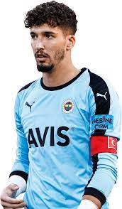 |
| Victor Lindelöf | Bek | 2 | Swedia | 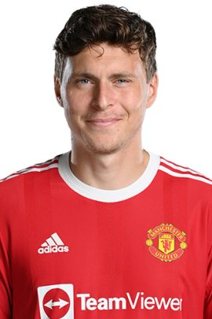 |
| Sofyan Amrabat | Gelandang | 4 | Maroko | 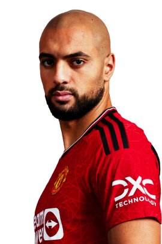 |
| Harry Maguire | Bek | 5 | Inggris | 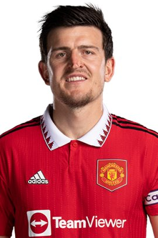 |
| Lisandro Martínez | Bek | 6 | Argentina | |
| Mason Mount | Gelandang | 7 | Inggris | 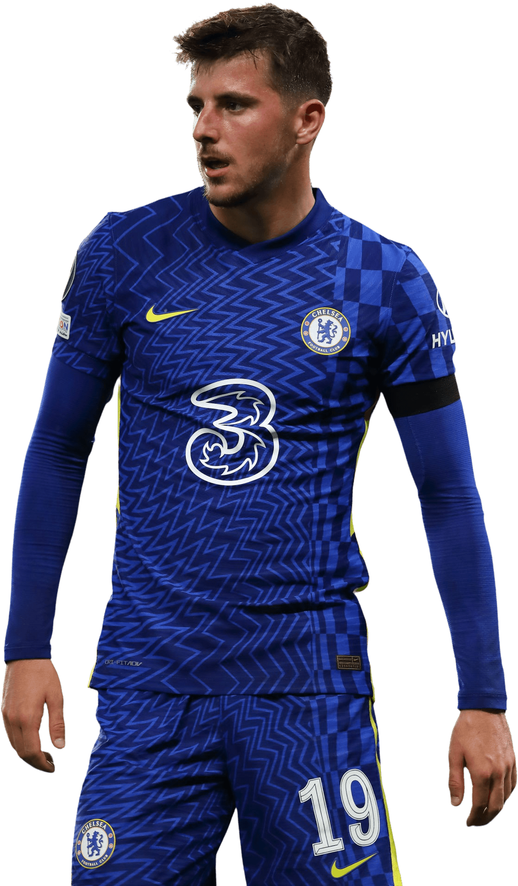 |
| Bruno Fernandes | Gelandang | 8 | Portugal | 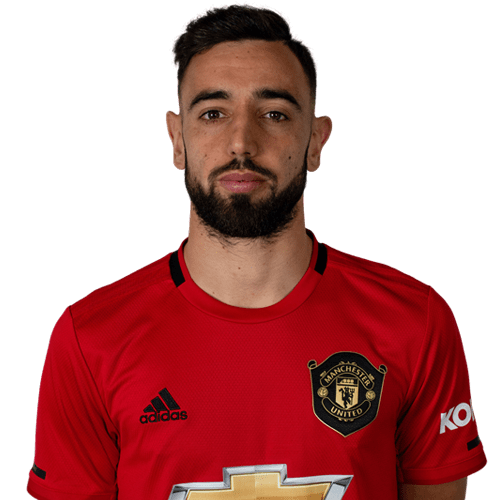 |
| Anthony Martial | Penyerang | 6 | Argentina | 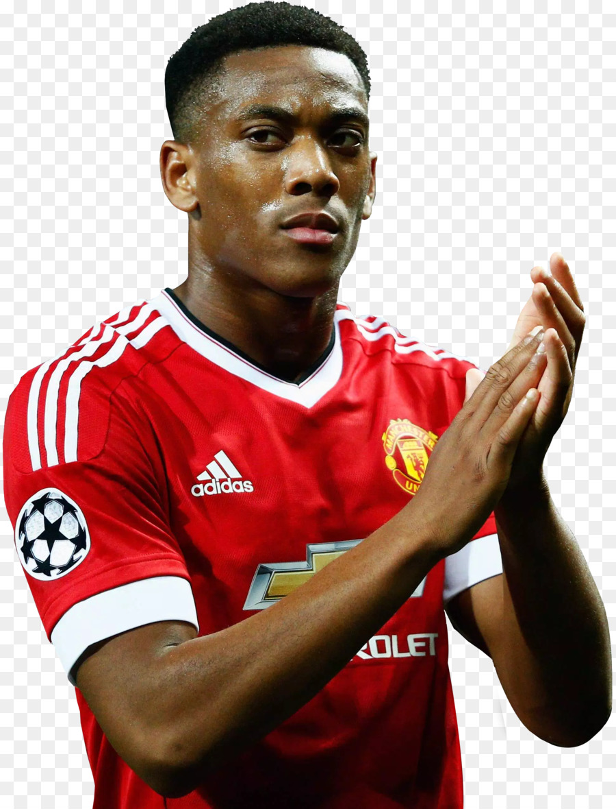 |
| Marcus Rashford | Penyerang | 10 | Inggris | 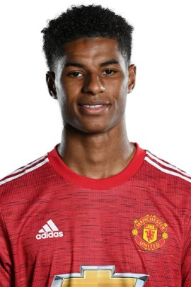 |
| Rasmus Højlund | Penyerang | 11 | Denmark | 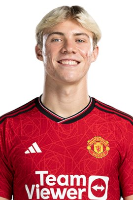 |
MANCHESTER UNITED
GLORY - GLORY MAN UNITED
Sejarah
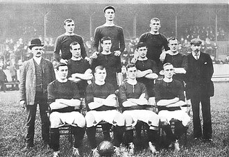
Manchester United Football Club adalah sebuah klub sepak bola profesional yang berbasis di Old Trafford, Manchester Raya, yang bermain di Liga Utama Inggris dengan gelar Liga Utama Inggris terbanyak sepanjang masa. Didirikan sebagai Newton Heath LYR Football Club pada tahun 1878, klub ini berganti nama menjadi Manchester United pada 1902 dan pindah ke Old Trafford pada tahun 1910. Manchester United telah memenangkan banyak trofi di sepak bola Inggris, termasuk 20 gelar Liga—terbanyak dalam sejarah, 12 gelar Piala FA, 6 gelar Piala Liga dan 21 gelar Community Shield FA—juga terbanyak dalam sejarah. Klub ini juga telah memenangkan tiga gelar Piala/Liga Champions, satu Liga Eropa UEFA, satu Piala Winners UEFA, satu Piala Super UEFA, satu Piala Interkontinental, dan satu Piala Dunia Antarklub FIFA—klub Inggris pertama yang menjuarai ajang ini. Pada musim 1998–1999, klub ini memenangkan treble (trigelar) dari Liga Utama, Piala FA, dan Liga Champions; prestasi ini belum pernah terjadi sebelumnya untuk klub Inggris. Manchester United juga merupakan salah satu klub tersukses sepanjang masa di Inggris. Bencana Udara München 1958 merenggut nyawa delapan pemain. Pada tahun 1968, di bawah manajemen Matt Busby, Manchester United adalah klub sepak bola Inggris pertama yang memenangkan Piala Eropa. Sedangkan Alex Ferguson memenangkan total 38 gelar utama, dari bulan November 1986 sampai Mei 2013,ketika ia mengumumkan pensiun setelah 26 tahun di klub.Rekan senegaranya David Moyes diangkat sebagai penggantinya pada tanggal 9 Mei 2013 namun ia dinilai gagal dan tak lama kemudian dipecat. Manchester United adalah klub sepak bola terkaya ketiga di dunia untuk 2011–12 dalam hal pendapatan, dengan pendapatan tahunan sebesar €395.9 juta, dan kedua klub paling berharga tahun 2013, senilai $3.165 miliar. Pada bulan Januari 2015 lalu, Manchester United dinobatkan sebagai klub terkaya kedua di dunia,Ini adalah salah satu tim sepak bola yang paling banyak didukung di dunia.Setelah sahamnya tercatat di London Stock Exchange pada tahun 1991, klub itu dibeli oleh Malcolm Glazer pada Mei 2005 di kesepakatan menilai klub di hampir £800 juta.Pada bulan Agustus 2012, Manchester United melakukan penawaran umum perdana di Bursa efek New York
Tahun awal (1878–1945)
Sebuah grafik yang menunjukkan kemajuan Manchester United FC melalui Sistem liga sepak bola di Inggris dari bergabung sebagai Newton Heath dalam 1892-93 untuk 2012-13 Tim pertama kali dibentuk dengan nama Newton Heath Lancashire and Yorkshire Railway F.C. pada 1878 sebagai tim karya Lancashire dan Yorkshire, stasiun kereta api di Newton Heath.[12] Kaus tim berwarna hijau - emas. Mereka bermain di sebuah lapangan kecil di North Road, dekat stasiun kereta api Piccadilly Manchester selama lima belas tahun, sebelum pindah ke Bank Street di kota dekat Clayton pada 1893. Tim sudah memasuki kompetisi sepak bola tahun sebelumnya dan mulai memutuskan hubungannya dengan stasiun kereta api, menjadi perusahaan mandiri, mengangkat seorang sekretaris perkumpulan dan pengedropan "L&YR" dari nama mereka untuk menjadi Newton Heath F.C saja. Tak lama kemudian, pada tahun 1902, tim nyaris bangkrut, dengan utang lebih dari £2500. Lapangan Bank Street mereka telah ditutup.
Era Sir Matt Busby (1945–1969)
Pada tahun 1945, Matt Busby ditunjuk menjadi manajer dari tim yang berbasis di Old Trafford ini. Dia meminta sesuatu yang tidak biasa pada pekerjaannya, seperti menunjuk tim sendiri, memilih pemain yang akan direkrut sendiri dan menentukan jadwal latihan para pemain sendiri. Dia telah kehilangan lowongan manajer di klub lain, Liverpool F.C., karena pekerjaan yang diinginkannya itu dirasa petinggi Liverpool adalah pekerjaan seorang direktur, tetapi United memberikan kesempatan untuk ide inovatifnya. Pertama, Busby tidak merekrut pemain, melainkan seorang asisten manajer yang bernama Jimmy Murphy. Keputusan menunjuk Busby sebagai manajer merupakan keputusan yang sangat tepat, Busby membayar kepercayaan pengurus dengan mengantar United ke posisi kedua liga pada tahun 1947, 1948 dan 1949 dan memenangkan Piala FA tahun 1948. Stan Pearson, Jack Rowley, Allenby Chilton, dan Charlie Mitten memiliki andil yang besar dalam pencapaian United ini.
1969–1986
Setelah masa yang gemilang, United mengalami masa-masa sulit ketika ditangani Wilf McGuinness, selesai di urutan delapan liga pada musim 1969–70. Kemudian dia mengawali musim 1970–71 dengan buruk, sehingga McGuinness kembali turun jabatan menjadi pelatih tim cadangan. Busby kembali melatih United, walaupun hanya 6 bulan. Di bawah asuhan Busby, United mendapat hasil yang lebih baik, namun pada akhirnya ia meninggalkan klub pada tahun 1971. Dalam waktu itu, United kehilangan beberapa pemain kuncinya seperti Nobby Stiles dan Pat Crerand. Manager Celtic yang berhasil membawa Piala Champions ke Glasgow, Jock Stein, ditunjuk untuk mengisi posisi manager—Stein telah menyetujui kontrak secara verbal dengan United, tetapi membatalkannya. Frank O'Farrell ditunjuk sebagai suksesor Busby. Seperti McGuinness, O'Farrell tidak bertahan lebih dari 18 bulan, bedanya hanya O'Farrell bereaksi untuk menanggulangi penampilan buruk dari United dengan membawa muka baru ke dalam klub, yang paling nyata adalah direkrutnya Martin Buchan dari Aberdeen seharga £125,000. Tommy Docherty menjadi manager di akhir 1972. Docherty, atau "Doc", menyelamatkan United dari degradasi namun United terdegradasi pada 1974, yang saat itu trio Best, Law and Charlton telah meninggalkan klub. Denis Law pindah ke Manchester City pada musim panas tahun 1973. Pemain seperti Lou Macari, Stewart Houston dan Brian Greenhoff direkrut untuk menggantikan Best, Law and Charlton, namun tidak menghasilkan apa-apa.
Era Alex Ferguson (1986–2013)
Alex Ferguson datang dari Aberdeen untuk menggantikan Atkinson dan mengantarkan klub meraih posisi ke-11. Musim berikutnya yaitu musim 1987–88, United menyelesaikan liga di posisi kedua, dengan Brian McClair yang menjadi pencetak 20 gol liga setelah George Best. United mengalami masa sulit 2 musim berikutnya. Dengan pembelian pemain yang cukup banyak, Ferguson tidak dapat memenuhi harapan suporter. Alex Ferguson telah berada dalam bahaya pemecatan pada awal 1990, tetapi sebuah gol dari Mark Robins membawa United menang 1–0 atas Nottingham Forest dibabak ketiga Piala FA. Ini membuat Ferguson terselamatkan dan pada akhirnya United memenangkan Piala FA, setelah mengalahkan Crystal Palace di partai ulang babak final. United memenangkan Piala Winners Eropa pada 1991, mengalahkan Barcelona di final, tetapi mengecewakan di musim berikutnya karena di liga mereka kalah dari pesaing terdekat, Leeds United. Kedatangan Eric Cantona di November 1992 merupakan sebuah langkah krusial United saat itu. Cantona membaur bersama pemain dan memenangkan Final Piala FA menjadikan MU menjadi juara dua di liga dan Piala FA. Ferguson membuat suporter kesal karena menjual beberapa pemain Beberapa dari mereka langsung terpilih menjadi anggota Tim nasional Inggris. Secara mengejutkan, United kembali meraih double pada musim 1995–96. Ini adalah pertama kalinya klub Inggris meraih double sebanyak dua kali dan akhirnya mereka mendapat sebutan "Double Double"
2013–sekarang
Pada tanggal 8 Mei 2013, Ferguson mengumumkan bahwa ia akan pensiun sebagai manajer pada akhir musim, tetapi dia akan tetap di klub sebagai direktur dan duta klub.Pihak klub mengumumkan pada hari berikutnya bahwa mantan manajer Everton. David Moyes akan menggantikan Ferguson mulai 1 Juli 2013, setelah menandatangani kontrak enam tahun.Pada tanggal 22 April 2014, United mengumumkan bahwa David Moyes telah meninggalkan klub[33][34] setelah Manchester United gagal mempertahankan gelar Liga Primer. Ryan Giggs lalu ditunjuk untuk menjadi pelatih interim. Pada tanggal 19 Mei 2014 Louis van Gaal resmi menggantikan Moyes sebagai pelatih, dengan Ryan Giggs sebagai asisten pelatih.[35] Walaupun di musim pertamanya Van Gaal mampu menyelesaikan musim di posisi 4 di Liga Primer dan berhasil membuat Manchester United kembali bermain di Liga Champions, di musim keduanya, Manchester United tersingkir dari Liga Champions pada fase grup.United juga tersingkir dalam perebutan gelar juara Liga Primer dalam 3 musim secara beruntun dan menyelesaikan musim di posisi ke-5, walaupun pada era kepelatihan Van Gaal, klub membeli pemain dengan harga mahal seperti Angel Di Maria, Memphis Depay, Morgan Schneiderlin, dan Anthony Martial. Namun, pada musim 2015-16, Manchester United berhasil menjuarai piala FA untuk ke-12 kalinya.[37] Walaupun demikian, Van Gaal dipecat oleh pihak klub pada akhir musim, dua hari setelah kemenangan piala FA,[38] dengan José Mourinho sebagai pelatih baru klub, dengan menandatangani kontrak dengan durasi 3 tahun.[39] Pada musim pertama era Mourinho, United berhasil menjuarai Community Shield, Piala Liga dan Liga Eropa. Wayne Rooney menjadi pencetak gol terbanyak dalam sejarah klub dengan 250 gol, melewati rekor Sir Bobby Charlton sebelum akhirnya kembali ke Everton.
Squad
Prestasi
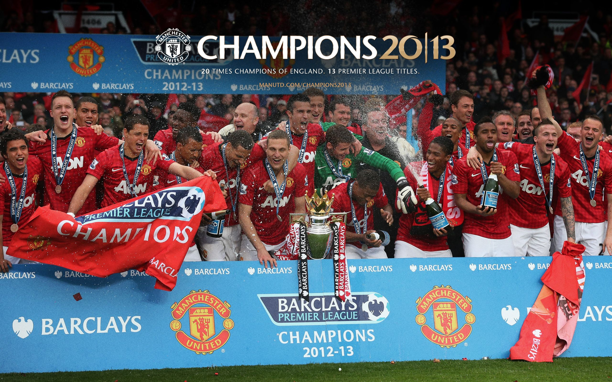
Piala pertama Manchester United adalah Piala Manchester, yang dimenangkan sebagai Newton Heath LYR pada tahun 1886.Pada tahun 1908, klub memenangkan gelar liga pertama, dan memenangkan Piala FA untuk pertama kalinya pada tahun berikutnya. Manchester United paling banyak memenangkan piala pada 1990-an; lima gelar liga, empat Piala FA, satu Piala Liga, lima Charity Shield (satu bersama), satu Liga Champions UEFA, satu Piala Winners UEFA, satu Piala Super Eropa, dan satu Piala Interkontinental. Klub saat ini memegang rekor untuk gelar yang sebagian top-divisi , sebagian Piala FA , dan yang sebagian penampilan Final Piala FA . Manchester United memegang rekor untuk gelar Liga Premier yang paling banyak , dan tim Inggris pertama yang memenangkan Piala Eropa pada tahun 1968. Piala terbaru klub datang pada April 2013 dengan gelar ke-20. Satu-satunya kehormatan besar bahwa Manchester United belum pernah menang adalah Liga Eropa,meski tim mencapai perempat final 1984-1985 dan semifinal kompetisi prekursor turnamen, Piala Inter-Cities Fairs, pada tahun 1964-65
Pengurus Klub
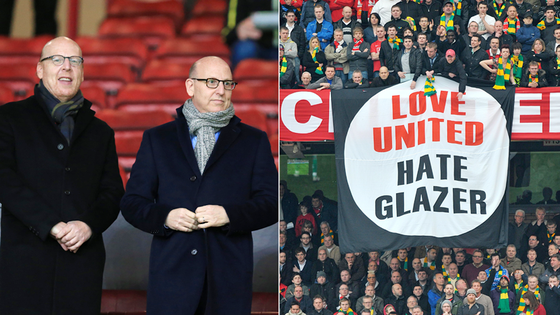
Pemilik Klub
- Pemilik: Keluarga Glazer
- Presiden Direktur: Martin Edwards
- Manchester United Limited
Pengurus Utama
- Pemilik: Joel Glazer dan Avram Glazer
- Wakil Ketua Eksekutif: John Murtough
- Direktur Operasional: Michael Bolingbroke
- Pelaksana Direktur Grup: Richard Arnold
- Direktur Pengembangan Perusahaan: Jamieson Reigle
- Direktur Non-eksekutif: Bryan Glazer, Kevin Glazer, Edward Glazer, Darcie Glazer Kassewitz, Robert Leitão, John Hooks dan Manu Sawhney.
Klub Sepak Bola Manchester United
- Direktur: David Gill, Michael Edelson, Sir Bobby Charlton, Sir Alex Ferguson
- Sekretaris Klub: John Alexander
- Duta Global: Bryan Robson
Staf Tim Senior
- Sekretaris Perusahaan: Patrick Stewart
- Asisten Sekretaris Perusahaan: Ken Ramsden
- Direktur Komunikasi: Phil Townsend
- Direktur Komersial: Ben Hatton
- Direktur Pemasaran: Jonathan Rigby
- Direktur Servis Finansial: Steve Falk
- Direktur Finansial dan TI: Steve Deaville
- Direktur Fasilitas: Clive Snell
Sponsor
Dalam lima tahun pertama kesepakatan senilai £500.000, Sharp menjadi sponsor kostum pertama klub
pada awal musim 1982–1983, hubungan yang berlangsung hingga akhir musim 1999–2000, ketika
Vodafone
menyetujui kesepakatan empat tahun senilai £30 juta. Vodafone setuju untuk membayar £36 juta
untuk
memperpanjang kesepakatan selama empat tahun, tetapi setelah dua musim membatalkannya untuk
berfokus
menjadi sponsor Liga Champions UEFA.
Untuk memulai pada awal musim 2006–2007, perusahaan asuransi Amerika AIG menyetujui kesepakatan
empat tahun senilai £56,5 juta yang pada bulan September 2006 menjadi yang paling mahal di
dunia.
Pada awal musim 2010–2011, perusahaan reasuransi Amerika Aon menjadi sponsor utama klub dalam
kesepakatan empat tahun bernilai sekitar £80 juta, sehingga kesepakatan sponsor kaus yang paling
menguntungkan dalam sejarah sepak bola. Manchester United mengumumkan kostum sponsor pelatihan
pertama mereka pada bulan Agustus 2011, menyetujui kontrak empat tahun dengan DHL yang
dilaporkan
bernilai £40 juta, dan diyakini menjadi contoh pertama dari kostum berlatih dengan sponsor dalam
sepak bola Inggris.
Produsen kostum pertama klub adalah Umbro, sampai kontrak lima tahun disepakati dengan Admiral
Sportswear pada tahun 1975. Adidas menerima kontrak pada tahun 1980, sebelum Umbro mulai mantra
kedua pada tahun 1992. Sponsorship Umbro yang berlangsung selama sepuluh tahun, diikuti dengan
memecahkan rekor £302.900.000 kesepakatan Nike yang akan berlangsung sampai dengan tahun 2015,
3,8
juta replika kaus yang dijual di 22 bulan pertama dengan perusahaan. Selain Nike dan Aon, klub
juga
memiliki beberapa tingkat rendah "platinum" sponsor, termasuk Chevrolet dan Budweiser.
Pada tanggal 30 Juli 2012, United menandatangani kontrak tujuh tahun dengan perusahaan otomotif
Amerika General Motors, yang menggantikan Aon sebagai sponsor kaus dari musim 2014–2015.
Kesepakatan
menampilkan logo merek Chevrolet.
Dan pada tanggal 15 Juli 2014, United mengumumkan rekor 10 tahun kontrak seragam senilai £750
juta
atau setara Rp15 triliun dengan aparel raksasa Jerman, Adidas yang dahulu pernah menjalin kerja
sama
pada akhir 1980-an hingga awal 1990-an. Kepastian ini mengakhiri hubungan kemitraan United
dengan
Nike yang sudah berjalan selama 13 tahun. Dengan demikian, jersey United yang dipakai musim
2014–2015 menjadi yang terakhir menggunakan produk aparel asal Amerika Serikat itu sebelum
kembali
mengenakan Adidas pada musim berikutnya.
Kontrak United tersebut mematahkan kontrak senilai £248 juta untuk durasi 8 tahun antara Adidas
dan
raksasa Spanyol, Real Madrid, serta kesepakatan £30 juta selama 5 tahun antara aparel asal
Jerman
lainnya, Puma dengan klub asal kota London, Arsenal.
Biodata Pembuat
Informasi Lainnya
| Nama | : | Roana |
| Nim | : | 312210027 |
| Kelas | : | TI.22.C.1 |
| Jenis Kelamin | : | Laki-Laki |
| Tempat Lahir | : | Karawang,Jawa Barat |
| Tanggal Lahir | : | 28/03/2001 |
| Fakultas | : | Teknik |
| Prodi | : | Teknik Informatika |